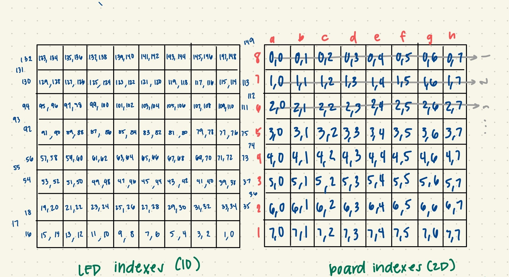

Code
- All the code is written in C++ for the Arduino.
- To send the code to the Arduino, we use the Arduino IDE
Chess AI
- The AI we're using is created by H.G. Muller and ported to the Arduino by Diego Cueva. This AI was preferred because of its small size (< 2kb) which allowed us not to overload the Arduino's memory causing crashing errors.
- The chess AI utilizes the minimax algorithm that looks ahead at each piece's moves and scores them based on
how much of a positional or material advantage that the move gains, and then returns the most optimal move.
- In order to cut the search for the most optimal move down, the algorithm uses Alpha-Beta pruning which avoids checking moves and branches that are already worse than the current searched moves.
- The chess AI checks for valid/invalid moves and winning/losing the game which we display to the user through the use of LEDs
LEDs
- We used the FastLED library to control our LEDs and light them up to different colors.
- The LEDs are in pairs of 2 under each square, skipping 3 after every row to account for physical design.
- We used the below mapping of coordinates to LEDs to know which LEDs to turn on for specific moves. For example if we wanted to light up square A8 we would need to turn on LEDS 133 and 134.

Reading Chess Input
- The 16 to 1 multiplexers can be turned on and off by sending a signal through the Arduino. By "shutting off" three of the multiplexers, we can read all the inputs from one multiplexer to get each piece's locations.
- These inputs are then put into an array and given to the AI to output a move.
- The code is constantly looping to check for button inputs. Once it detects the end turn button, the rest of the code runs.
Version Control: Github
- We used two seperate githubs - one for the website, one for the code - to keep track of who makes what edits and revert back to previous stages if necessary.